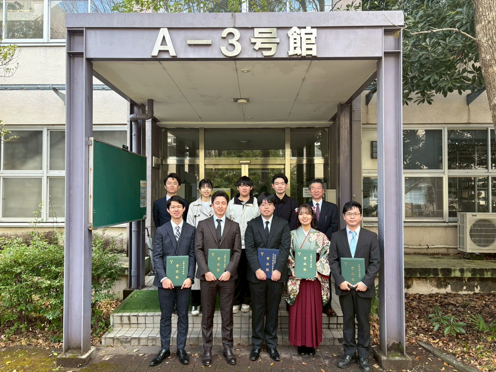

【トピックス】
2026/4
・卒研生として小林雅尚さん、近藤毅弥さん、高橋仁太さんの3名が当研究室に配属となりました。昨年度卒業生の清水圭吾さん、粟盛智也さんの2名は修士に進学し、引き続き当研究室メンバーとなりました。
・4月7日に入学式が行われました
・11th International Conference on Information and Communication Technology for Intelligent Systems (ICTIS 2026) と 3rd International Conference on "Innovations in Biotechnology and Health Sciences" (BIOCOM 2026) にて小澤教授が発表を行います。
2026/3
・松井希和さんの論文が国際会議BioCom 2026に採択されました．
・日本音響学会第155回 (2026年春季) 研究発表会にて鳥谷助教，両角さんが発表を行いました．
・3月19日に修了式・卒業式が行われました。M2の両角有真さんが修士課程を修了、卒研生の清水圭吾さん、松井希和さん、三木歩さん、粟盛智也さんの4名が学部を卒業しました。おめでとうございます！

・日本音響学会第155回 (2026年春季) 研究発表会にて鳥谷助教，両角さんが発表を行います．